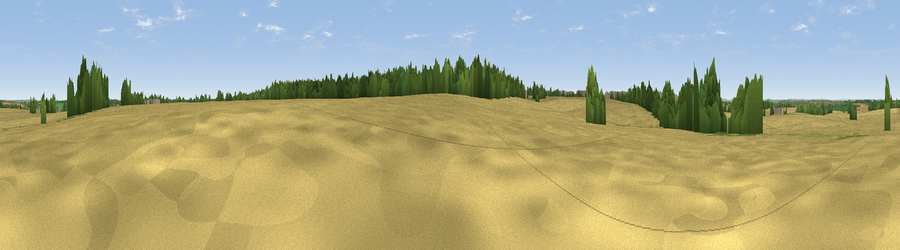

Preston Heights
#44667 in England · top 86% of its area beats it · near PiddingtonThe view, rendered

A 360° render of this exact spot computed from the terrain model, tree cover and land cover — summer colours, afternoon light, calibrated against photographs of famous viewpoints. Real trees, hedges and buildings will differ in detail.
The panorama
Grey silhouette: terrain skyline in each direction (720 bearings, Earth curvature and refraction included). Dashed green: skyline with trees (+15 m) and buildings (+8 m) as obstacles. Blue strip: how far the ground is visible on each bearing.
Where the view opens
Wedge length = distance to the farthest visible ground on that bearing (vegetation-aware). Rings at 10, 25 and 50 km.
What fills the view
85% cropland · 7% woodland · 5% grassland · 2% built-up
Angular shares of the visible panorama (visual magnitude), not map area. Landscape diversity 0.25 (0–1 Shannon).
Key numbers
More beautiful places nearby
The staircase of upgrades: each row has a higher view potential than everything closer. Driving times are estimates from straight-line distance, calibrated against real road routing — check an actual route before setting out.
| Place | Direction | Drive | Score |
|---|---|---|---|
| Salcey Heights | SSW · 1 km | ~3 min | 33.8 |
| Hunsbury Hill | NW · 8 km | ~15 min | 34.3 |
| Viewpoint near Bugbrooke | WNW · 11 km | ~21 min | 40.7 |
| Viewpoint near Bugbrooke | WNW · 11 km | ~21 min | 41.9 |
| Potcote Hill | W · 13 km | ~23 min | 44.2 |
| Glassthorpe Hill | WNW · 15 km | ~26 min | 44.9 |
| Viewpoint near Long Buckby | NW · 21 km | ~35 min | 45.6 |
| Viewpoint near Finedon | NE · 21 km | ~36 min | 47.5 |
52.16971, -0.84344 · source: osm peak · position refined by local search. Computed location — check access rights before visiting.